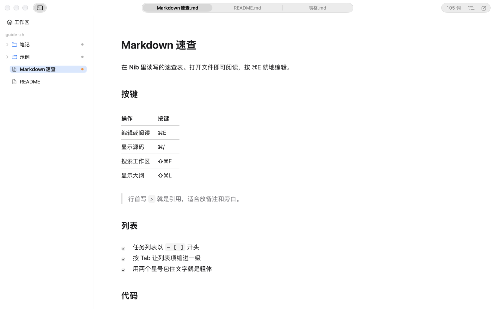
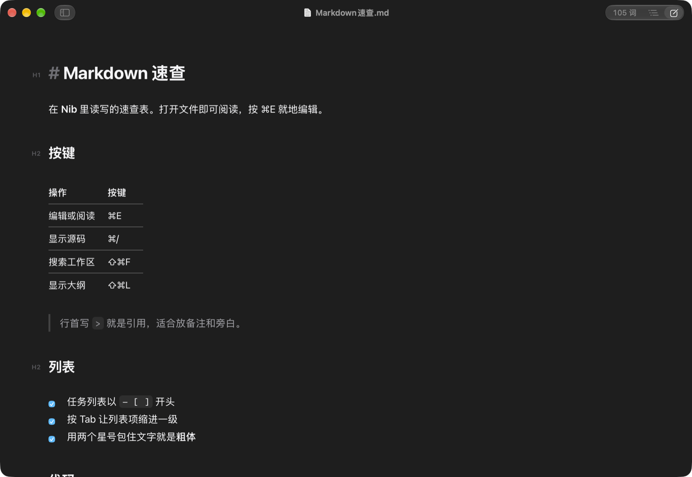

开源的 Mac Markdown 阅读编辑器
打开 .md，看到的就是成品。
打开即渲染，⌘E 就地修改，存盘只写回你改过的地方。
开源的 Mac Markdown 阅读编辑器
打开即渲染，⌘E 就地修改，存盘只写回你改过的地方。

Nib 是免费开源的 Mac Markdown 应用。它打开文件时直接显示排好版的文档，而不是源码。按 ⌘E 就地编辑，只有光标所在行露出 Markdown 语法，手感同 Typora。存盘只写回你的改动，文件在 git 里保持干净。别的程序改写了文件它会自动刷新，所有文档并在一个窗口的标签里，还能搜整个文件夹。原生应用，约 4 MB，需要 macOS 15。
读的时候，它就是一页排好的文档。

改一个词，git diff 里就只有这一个词。
编程 Agent 的方案、脚本的报告、构建工具的文档。你多半在读，偶尔改一行。
终端、脚本或 Agent 改写了文件，打开着的页面自动更新。
从访达、终端、链接打开的文件都并进同一个窗口。⌘1 到 ⌘9 切换。
改过的文件标橙点，新文件标绿点，提交后随即消失。
⇧⌘O 按名字开文件，⇧⌘F 搜全部内容并跳到那一行。2500 个文件不到 0.25 秒。
关掉最后一个窗口也不退出，不占 Dock。下一个文件约 0.15 秒打开。
久未查看的标签交还内存，切回来还在原处。

Typora 用户熟悉的那些，都在。
存进文档旁的「文档名.assets」，插入相对路径。认 typora-copy-images-to。
浏览器、Google Docs、飞书里的富文本转成干净的 Markdown。
CommonMark 与 GitHub 风格 Markdown，Tab 调列表层级。
⇧⌘L 大纲，F8 只亮当前段落，F9 让当前行停在中间。
PDF，或图片内嵌的单文件 HTML，直接发给别人。
浅色、深色、暖纸，也能读 Typora 主题。字体、行高、快捷键都能改。
Typora 定义了就地编辑，MarkEdit 是快速的原生源码编辑器，Obsidian 是一整套笔记系统。Nib 用来读 Markdown，需要时顺手改。
| Nib | Typora | MarkEdit | Obsidian | |
|---|---|---|---|---|
| 打开文件时 | 排好版的页面 | 实时预览编辑器 | 高亮的源码 | 实时预览编辑器 |
| 文件放哪 | 任意位置 | 任意位置 | 任意位置 | 仓库文件夹内 |
| 侧栏 git 状态 | ✓ | — | — | 需装插件 |
| 界面 | 原生外壳，CodeMirror 内核 | Electron | 原生外壳，CodeMirror 内核 | Electron |
| 平台 | Mac | Mac · Windows · Linux | Mac | Mac · Windows · Linux · iOS · Android |
| 价格 · 协议 | 免费 · GPL-3.0 | 收费 · 闭源 | 免费 · MIT | 免费 · 闭源 |
Nib 没有经过 Apple 公证，第一次打开需要放行一次。
打开 Nib.dmg，把 Nib 拖进「应用程序」文件夹。
先打开一次并点「完成」，再到「系统设置 › 隐私与安全性」点「仍要打开」。
在访达选中一个 .md，按 ⌘I，「打开方式」选 Nib，点「全部更改」。
需要 macOS 15 或更高。通用应用，支持 Apple 芯片与 Intel。
都能在设置里改。
| 编辑 / 阅读 | ⌘E |
| 源码 | ⌘/ |
| 快速打开 | ⇧⌘O |
| 搜索工作区 | ⇧⌘F |
| 侧栏 | ⌃⌘S |
| 大纲 | ⇧⌘L |
| 专注 / 打字机 | F8F9 |
| 切换标签 | ⌘1–⌘9 |
| 重新打开关掉的标签 | ⇧⌘T |
最常被问到的几件事。
Nib 的就地编辑和 Typora 一样，只有光标所在行露出语法。它免费、以 GPL-3.0 开源、是原生 Mac 应用。和 Typora 不同，它打开文件先进阅读视图，按 ⌘E 编辑。它也能用 Typora 主题。
把 Nib 设为 .md 的默认应用，然后在终端里点文件路径，或从访达打开。文件以排好的版面打开，并进已有窗口的标签里；Agent 改写文件时自动刷新。把项目文件夹加进侧栏，还能看到上次提交后改了哪些文件。
只改你编辑的地方。存盘时写回你的改动，其余逐字节保持原样，包括换行符和空行。Nib 不写元数据，不留隐藏文件。
能。把主题的 CSS 和同名文件夹放进 ~/Library/Application Support/Nib/themes，在设置里选。阅读视图完整套用主题，编辑时借用主题的颜色和字体。Nib 兼容格式，但不附带 Typora 的主题。
免费，以 GPL-3.0 协议开源。没有账号，没有付费项。
Nib 没有经过 Apple 公证。先打开一次并关掉提示，再到「系统设置 › 隐私与安全性」点「仍要打开」。只需一次。
暂不支持，这类代码块按代码显示。